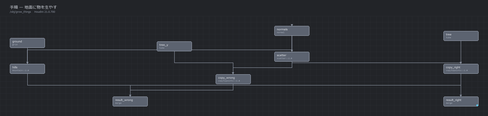
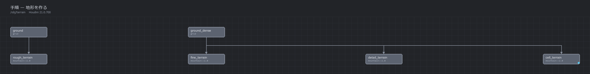
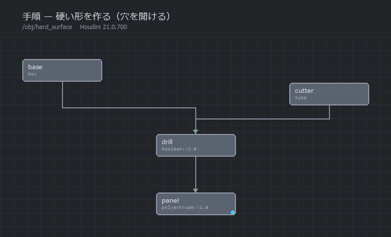
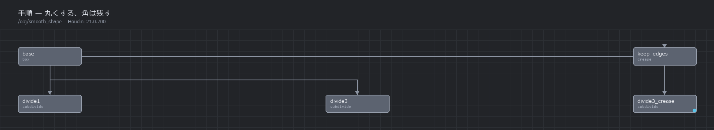
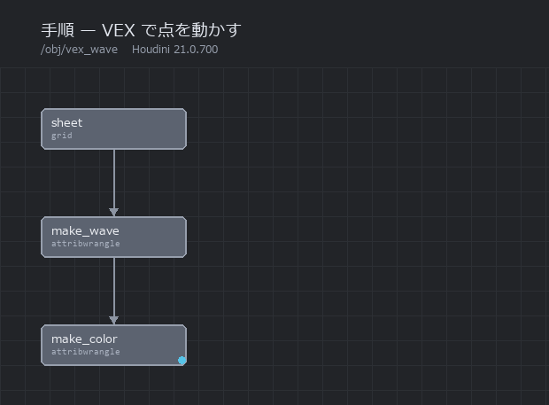
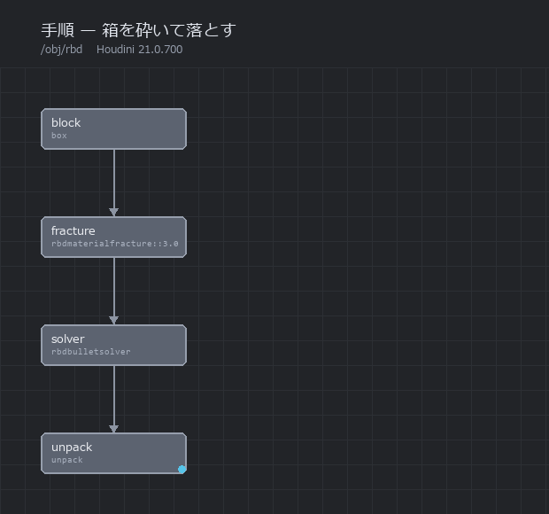
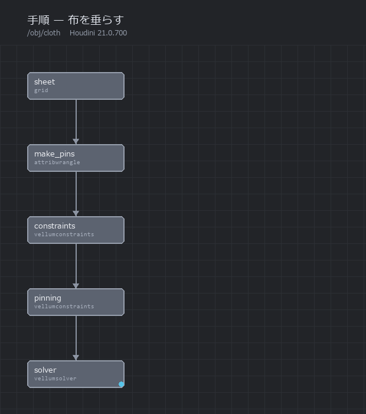
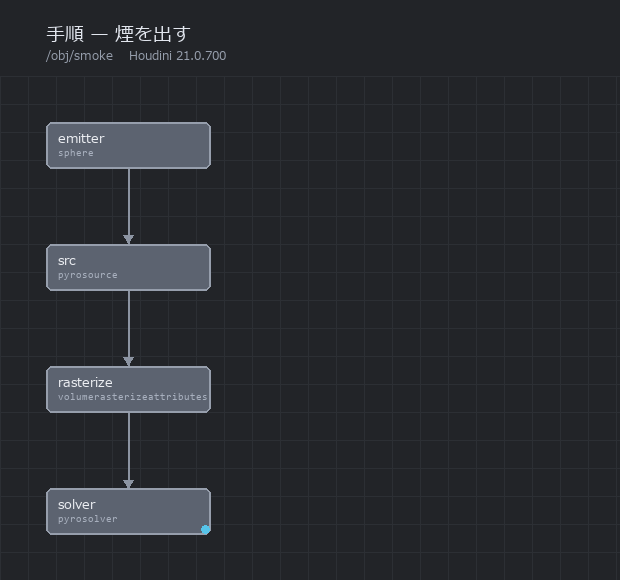
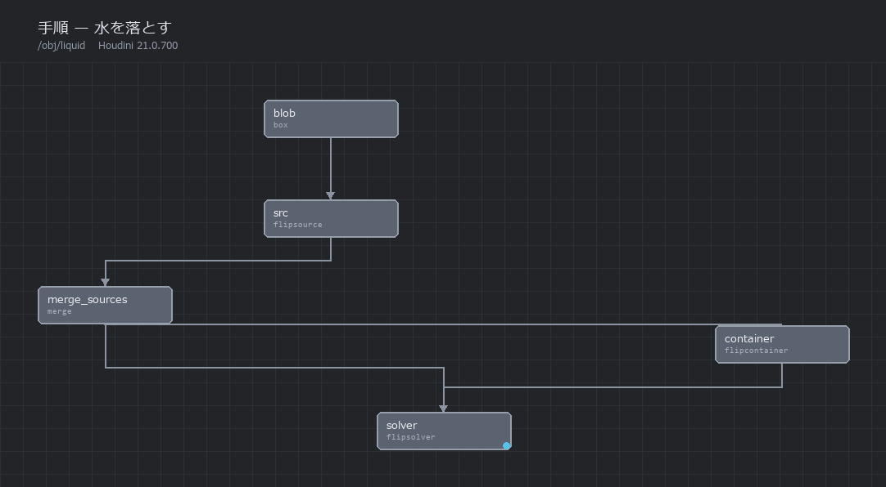
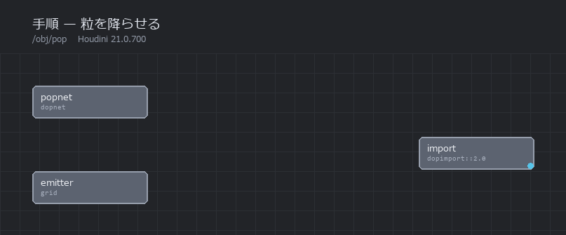

box
SOP立方体をひとつ出す。
実験の出発点として一番よく使う。既定で点が8個、面が6枚のいちばん単純な形が出てくる。ここに他のノードをつないで、点の数や形がどう変わるかを見る。
size縦横高さ。既定は1辺1.0t置く位置
 box の既定（8点・6面）
box の既定（8点・6面）
Houdini research hub
Houdini を実際に動かして確かめたことだけを積み上げる場所。 推測は書かない。数字が合わなかった回も、そのまま残す。
上から順に読むと、作り方 → 確かめ方 → 言葉の意味、の順で入れます。
プロシージャルモデリングから始めて、いまはエフェクトに入っている。

200個すべての向きを測って、複製の向きが のどの軸に対応するかを確定させた。答えは Z 軸。

面の数はちょうど4倍ずつ増える。縮む原因は分割ではなく平滑化だった。

14通り並べると振幅に9.3倍の開きがあった。外へ押すものと内へ削るものがある。

硬い物体なので体積は全フレームで 8.00000。ばらつきは 0.0000000 だった。

毎フレーム (1−d) 倍という仮説を立て、実測と4桁一致させた。

サンプル数を4倍にすればノイズは半分——という式を立てて確かめた。 当たったのは狭い範囲だけで、指定した数がそのまま使われていないと分かった。
ノードの組み立ても描画も、hython という文字だけの実行環境から行っている。
ノードを作って配線する。変えたパラメータだけ記録に残す。
保たれるはずの量を選び、条件ごと・フレームごとに数える。
全条件を同じカメラから描画する。見た目の差が条件の差になる。
先に式を立てて、実測と突き合わせる。外れたら指標を疑う。
PDF・このサイト・Gemini Notebook へ同じ内容を流す。
ネットの情報は出典を確かめ、動かせるものは動かす。「Apprentice では hython が使えない」も「mountain のパラメータは roughness」も、実際には誤りだった。
実験003では最初に選んだ指標が不適切で途中で捨てた。失敗した測り方も消さずに書く。
「縮む原因は平滑化」は、平滑化しない方式に切り替えて確かめた。覆る条件を先に決める。
glossary.json から用語集・本文のポップアップ・Notebook 用 PDF を生成している。説明が食い違わない。
Gemini Notebook の上限は300件。実験ごとに増やさず、テーマ単位の1ソースを差し替えて更新する。
プロシージャルモデリングとエフェクトは別の流れとして扱う。読む側が筋を追える単位で切る。
| 用途 | 中身 |
|---|---|
| ノード構築とレンダ | hython 21.0.700（Apprentice） |
| 確認用の描画 | OpenGL ROP / Smooth Wire Shaded（速い。1枚0.7秒） |
| 見せる描画 | Karma（光が中を通る。同じ絵で5倍の時間） |
| 接続図 | ノード位置の JSON から Pillow で描画 |
| レポート | reportlab で日本語 PDF。文字が残るので Notebook が引用できる |
| Notebook 連携 | notebooklm-mcp-cli（ローカル PDF を直接ソースにできる） |
How to
作り方だけを順番に並べたもの。カードを押すと手順が開く。 1段ごとに図があり、最後に完成図と組み上がったノードグラフが出る。 なぜそうなるのかまで知りたくなったら、そこから実験ログへ進める。

でこぼこした地面を作り、その上に200本の木を立てる。で最もよく使う組み方で、木を岩や草に変えればそのまま応用できる。
grid平らな格子を1枚出す。大きさを 10×10、分割を 40×40 にした。分割の数がそのまま点の数になり、あとで乗せるでこぼこの細かさの上限を決める。

mountain地面にで起伏を付ける。height を 0.6、elementsize を 3.0 にした。elementsize は「うねりの大きさ」で、小さくすると細かい岩肌、大きくするとゆるい丘になる。

normal面がどちらを向いているかを表す N を作る。この段でやるのが肝心で、点だけになってからでは面が無いので計算できない。ここで作っておけば、次でばらまく点が N を受け継ぐ。
scatter地面の上に200個の点を散らす。この点が「木を立てる場所」になる。面積の広いところほど多く置かれるので、傾いた斜面でも自然にばらける。

tube木の代わりに細い円錐を1本作る。太さを上下で変えて先細りにした。そして回転を X に 90 度かけて、Z 軸方向に倒しておく。理由は次の段で分かる。

copy to points1本目の入力に円錐、2本目に点をつなぐ。点が持っている N に合わせて、1本ずつ向きが決まる。最後に地面と合流させれば完成。
つまずくところ
は、の Z 軸を N に合わせる。Y 軸に立ったままの円錐を渡すと、200個すべてが90度倒れる。実験008で200個すべての角度を測ったところ、Y軸のままだと 90.00°、Z軸に倒しておくと 0.00° だった。

tube の type は既定が Primitive で、点が1個・面が1枚しか出てこない。複製しても何も見えないので、Polygon に変える。
を通すと面が無くなり点だけになる。そのあとで normal をかけても N は作れない。順番を逆にすると、木が向きを失って全部同じ方向を向く。
組み上がったノードグラフ


平らな板からでこぼこした地面を作る。Houdini で最初に覚えると応用が広い組み方で、岩肌にも雪原にも同じ手順で届く。
grid大きさ 10×10 の格子を出す。まずは分割を 20×20 にしておく。分割の数がそのまま点の数になり、あとで乗せる凹凸の細かさの上限を決める。

mountainheight を 1.2、elementsize を 4.0 にする。height は凹凸の高さ、elementsize はうねりの大きさ。この時点では板がカクカクしている。点が足りないせいで、の形を表しきれていない。

grid分割を 160×160 に上げる。ノイズの設定は何も変えていない。それでも見た目がなめらかになる。凹凸の大きさを決めているのは elementsize で、点の数は「どこまで細かく表せるか」を決めている。

mountainelementsize を 1.2 に下げ、rough を 0.75 に上げる。elementsize はうねりを細かくし、rough はざらつきを足す。点が足りていれば、ここで岩肌らしくなる。
mountainbasis を worleyFA にする。細胞のような模様のノイズで、削られたような形になる。14種類あり、選ぶだけで見た目が大きく変わる。

つまずくところ
elementsize を小さくしても、点が足りなければ表せない。実験004では、重ねるノイズの枚数（oct）を 3 から 8 に増やしても、点が足りない間はまったく変化がなかった。点を増やして初めて効き始める。
roughness や octaves という名前は存在しない。実際の名前は rough / oct / lac。一般的な名前で書くとエラーになる。
実験003で測ったところ、分割してからノイズをかけると凹凸のずれが最大 0.08062、逆の順だと 0.03671 だった。約2.2倍の差がある。分割は周りの点を平均するので、先に作った凹凸をなめしてしまう。
組み上がったノードグラフ


機械や建物のような、角のはっきりした形を作る。ここでは箱に円柱で穴を開ける。引く形を変えれば、溝でも窓でも同じ手順で作れる。
box大きさ 2.0 × 1.0 × 1.4 の箱を出す。8点・6面のいちばん単純な形。

tube半径 0.32、高さ 3.0 の円柱を作る。箱より高くしておくのが肝で、そうしないと貫通せずに途中で止まる。type は Polygon にする（既定の Primitive だと点が1個しか出ない）。

boolean1本目の入力に箱、2本目に円柱をつなぎ、booleanop を subtract（差）にする。箱から円柱の形が抜ける。union（和）なら足し算、intersect（積）なら重なった部分だけが残る。
つまずくところ
円柱が箱より短いと、途中で止まった袋小路の穴になる。上下にはみ出す長さにしておくのが確実。
実験012で確かめたところ、和と積の合計が元の2つの合計と一致し（差 0.0000049）、差の体積も関係式とちょうど 0 の差で一致した。見た目で判断がつかないときは、この関係式で確かめられる。
組み上がったノードグラフ


カクカクした形をなめらかにしたい。でも残したい角もある。この2つを両立させる。
box8点・6面の立方体。ここから始める。

subdivideiterations を 1 にする。面が4倍に増えて、角が少し丸まる。1回だけだと、まだ立方体だと分かる形。

subdivideiterations を 3 にすると、面は 64倍の 384枚になり、ほとんど球になる。分割は1回ごとに面を正確に4倍にする。

crease分割の前に crease を挟み、残したい辺に重みを付ける。重み 3 にすると、分割 3回に耐えて角が残る。重みの数字は「何回の分割まで角を保つか」を表す。
つまずくところ
分割すると形が少し小さくなる。実験002で、なめらかにしない方式（Bilinear）で試したところ、1辺は 1.00000 のまま変わらなかった。縮ませているのは分割そのものではなく、同時に走る平滑化のほう。
実験011で、重み1のときに1辺の長さだけ見ると角が保たれているように見えた。ところが折れ角を測ると 28.07° まで崩れていた。指標を1つしか見ないと誤判定する。
面は1回ごとに4倍。3回で64倍、6回で4096倍になる。立方体の6面が6回で 24,576面になる。重くなって手が止まるので、必要な分だけにする。
組み上がったノードグラフ


を並べる代わりに、数行のコードで点を動かす。既存のノードにない動きを作りたいときの逃げ道であり、同時にいちばん速い手段でもある。
grid10×10 の格子を 120×120 に分割する。 は点1つずつに同じ計算を走らせるので、点が多いほど結果はなめらかになる。

attribwrangle実行対象（class）を「点ごと」にして、2行書く。1行目で中心からの距離を測り、2行目でその距離から高さを決める。距離で割っているので、外側ほど波が小さくなる。

attribwrangleもう1つ置いて、高さから色を作る。Cd は色の。高いところほど赤く、低いところほど青くなる。
つまずくところ
class を「点ごと」にすれば点の属性、「面ごと」にすれば面の属性になる。同じコードでも置き場所が変わるので、あとのノードが見つけられなくなることがある。
パスをそのまま書くと、エラーも警告も出ないまま 0 が返る。頭に op: を付けるのが正しい。気づきにくいので覚えておく。
実験010で、 ループを VEX に書き換えたら 3,969面で 85.9倍速くなった。ただし for-each には「かたまりを切り離す」働きもあり、そこが必要な場合は置き換えられない。速さだけで選ぶと目的を失う。
組み上がったノードグラフ


硬いものが割れて崩れる。で最初に触ると分かりやすい題材で、箱を壁や柱に変えれば、そのまま破壊の表現になる。
box大きさ2倍の箱を、床から少し浮かせた高さに置く。この時点ではただの箱で、8点・6面しかない。

rbdmaterialfracture素材に concrete（コンクリート）を選ぶ。素材ごとに割れ方の性質が変わる。ここで割れるのは形だけで、まだ何も動かない。動かすのは次の段。

rbdbulletsolver破片をそのままにつなぎ、床を置く設定を入れる。それだけで重力で落ちる。 を組む必要はない。

rbdbulletsolverフレームを進めると床に当たって砕け散る。見えるようにするには unpack を通して中身を取り出す。
つまずくところ
実験014で破片の広がりを測ったところ、落下中はずっと 2.0000 のままで、着地して初めて 5.6408 に広がった。割ってあっても、力がかからなければ割れ目は開かない。
硬いものなので体積は変わらないはず。実測でも全フレームで 8.00000、ばらつき 0.0000000 だった。おかしな結果が出たときは、この量を見ると設定ミスに気づける。
止まった破片は床から約0.022だけ沈んだ位置にある。接触の計算上、完全にゼロにはならない。
組み上がったノードグラフ


板を布にして、両端を留めて垂らす。旗・カーテン・服の土台になる組み方。
grid4×4 の板を 30×30 に分割する。分割が粗いと折り目がカクカクするので、布として見せるならこのくらいは要る。

attribwrangleを1行書いて、左右の端の点に pins という名前を付ける。ここで名前を付けておくと、あとのノードが「どこを留めるか」をこの名前で指定できる。

vellumconstraintsconstrainttype を cloth にする。どの点とどの点が、どれくらいの強さで結ばれているかが決まる。続けてもう1つ置き、type を pin、group を pins にして留める。
vellumsolver拘束を作ったノードの出力を2本とも渡す。重力で垂れ始め、しばらくすると形が落ち着く。

vellumsolverフレームを進めると、垂れ方が止まって形が変わらなくなる。
つまずくところ
group を空のままにすると「全部が対象」と解釈され、布全体が固定されて一切動かない。実験015では、最下点が全フレーム 3.0000 のままという症状で気づいた。
grouptype の既定は。点のを渡すなら points に変える。変えないと指定が効かない。
見えている数値をいくら触っても布はほとんど変わらない。効いているのは指数のほうで、既定が10になっている。実験015で、値と指数を入れ替えた組み合わせが同じ結果になることを確かめた。硬すぎる・柔らかすぎると感じたら指数を疑う。
組み上がったノードグラフ


球から煙を立ち上らせる。温度を一緒に供給するのが肝で、これを忘れると煙はその場で濃くなるだけで動かない。
sphere小さな球を下のほうに置く。ここから煙が出る。形は何でもよく、球でも箱でも文字でもよい。

pyrosource属性の個数を2にして、1つ目に density（濃さ）、2つ目に temperature（温度）を指定する。温度を入れるのがここでの肝。浮力は温度で生まれるので、これがないと煙は昇らない。
volumerasterizeattributes点に書き込んだ値を、立体の格子に焼き込む。こちらの属性欄は空白区切りの文字列なので、density temperature と2つ並べて書く。

pyrosolverつなぐだけで煙が立ち上る。dissipation を上げると消えやすくなり、disturbance を上げると細かくばらける。

pyrosolverフレームを進めると、頭が広がってキノコ型になる。計算する領域も自動で伸びていく。
つまずくところ
実験021で測ったところ、density だけを供給した場合、中身のあるマス目の数が全フレームで 504 のまま、計算領域も 16×32×16 のまま変わらなかった。濃くなるだけで昇りも広がりもしない。温度を足したら、マス目は28倍、領域は縦に4.5倍に伸びた。

pyrosource の attributes は「作る属性の個数」で、名前を書く欄ではない。volumerasterizeattributes の attributes は空白区切りの文字列。名前が同じで意味が違うので、片方の書き方でもう片方を埋めると動かない。
OpenGL の描画は速いが、光が煙の中を通る計算をしない。濃淡は出るが、どちらから光が当たっているかは分からない。見せる絵にするときは を使う。
組み上がったノードグラフ


上から水を落として、床にぶつけて広げる。つなぎ方に独特の作法があり、そこさえ越えれば難しくない。
box小さな箱を上のほうに置く。この形の中から水が湧く。

flipsource箱をつないでに変える。volumename を source に変えるのを忘れない。既定は surface で、そのままつないでも水は1滴も出ない。
flipcontainer水を計算する範囲を決める箱。ただの箱ではなく、液体の粒・容器・衝突という3つの筋道を束ねる中継点でもある。
merge器の1番目の出力と、作った湧き出し口を合流させる。ここで初めて「この器のここから水が出る」という形になる。

flipsolver器の3つの出力を、の3つの入力へそのまま渡す（1番目だけは合流させたほうを渡す）。床を置く設定を入れると、落ちた水が溜まる。

つまずくところ
実験017で4通りの配線を試して、すべて同じエラーで止まった。器が3つの筋道を束ねる中継点だと気づいていなかったのが原因。粒は器に入れて、器の3出力をソルバの3入力へ渡す。
器の1番目の出力を流れているのは粒ではなく、名前の付いた7つのボリューム。source という名前のものだけが水を湧かせる。実測では source で3,588粒、surface や別名では5粒のまま何も起きなかった。
既定では水面付近の層だけが粒で表される（）。水位を上げて量を5倍にしても、粒の数はほとんど変わらない。量の目安に使いたいときは、この設定を切る。
器とソルバの両方に同じ値を入れる。揃っていないと結果が狂う、と付属ヘルプに書いてある。
組み上がったノードグラフ


火花・雨・砂のような「小さなものがたくさん動く」表現の土台。ここだけは を自分で組む必要がある。
grid小さな板を上のほうに置く。この面から粒が生まれる。

dopnetパーティクルは だけでは組めない。この箱を作って、中に部品を並べていく。
popsolverpopobject（粒の入れ物）をの1番目、popsource（粒を生む部品）を2番目、popforce（力を加える部品）を3番目につなぐ。popsource には、さっきの板のパスを指定する。
dopimportDOPネットワークの結果は、そのままでは形として使えない。このノードで取り出す。読み込む対象の欄に * を入れるのを忘れない。空だとエラーも出ないまま0点になる。

dopimport毎秒200個の指定なら、1フレームあたり約8.3個ずつ増える。重力で落ちながら、下へ長い流れを作る。

つまずくところ
計算自体は動いているのに、SOP側では1点も見えない。エラーも警告も出ないので気づきにくい。* を入れる。
実験020で測ったところ、粒は齢より約1.3刻みぶん遅れて落ち始める。刻み（substeps）を倍にすると、ずれは半分になる。見た目だけなら既定で問題ない。
組み上がったノードグラフ

Experiments
カードを押すと要点が開く。そこから全文のログへ進める。
001〜007 は形を作る側の話。分割とノイズがそれぞれ何を決めているかを切り分けた。 → 008〜012 で道具が増える。ばらまき・複製・VEX・ブーリアン。 → 013 から時間が入り、014〜017 はシミュレーション。 剛体・布・煙・液体を順に当たっている。
カードを押すと要点が開く。タグで絞り込める。
042の毛はばらばら。束にすると見え方がどう変わるか測る
Nodes
実験で実際に使ったノードだけを載せている。「そのノードで何ができるか」を先に1行で書き、 実際に踏んだ落とし穴を添えた。
何もないところから最初のジオメトリを出すノード。ここが実験の出発点になる。
立方体をひとつ出す。
実験の出発点として一番よく使う。既定で点が8個、面が6枚のいちばん単純な形が出てくる。ここに他のノードをつないで、点の数や形がどう変わるかを見る。
size縦横高さ。既定は1辺1.0t置く位置
box の既定（8点・6面）
球を出す。
凹凸を付ける実験の土台に使った。ただし球は「もともと丸い」ので、変化を測る土台としては癖がある。実験007で平面に移したのはそのため。
type球の作り方。多面体・NURBSなどで点の並びが変わるrows / cols分割数。点の数を決める sphere を土台にした状態
sphere を土台にした状態
平らな格子を出す。
地形の土台。rows と cols で点の数を直接決められるので、「点の数を変えると何が変わるか」を調べるのに一番向いている。
rows / cols縦横の点の数。面の数は (rows−1)×(cols−1)size平面の大きさ grid に mountain をかけた地形
grid に mountain をかけた地形
筒や円錐を出す。
複製の向きを調べる実験でテンプレートとして使った。先端がある形なので「どちらを向いているか」が測れる。
type0=Primitive（数式の形）／1=Polygon（実際の面）rad1 / rad2上下の半径。片方を0にすると円錐になる
tube を複製して向きを測った
入ってきた形を作り変えるノード。プロシージャルモデリングの中心。
面を細かく割って、形を滑らかにする。
カクカクした形を丸くしたいときに使う。1回かけるごとに面が4倍に増える。増えた点の位置は元の形の内側に寄るので、全体が少し縮む。
iterations何回割るか。1増やすと面は4倍algorithm割り方。Catmull-Clark が既定
3回かけた状態。立方体が球に近づく
ノイズで点をずらして、でこぼこにする。
地形や岩肌を作る定番。既にある点を動かすだけで、点は1つも増えない。だから細かい凹凸が欲しければ、先に subdivide などで点を増やしておく必要がある。
height凹凸の高さ。純粋な倍率で、2倍にすれば凹凸もちょうど2倍elementsize凹凸の細かさ。小さいほど細かい模様になるbasisノイズの種類。14通りあり、見た目が大きく変わるrough / oct / lac重ねるノイズの性質・枚数・細かさの比bias外へ出っ張らせるか、内へ食い込ませるか rough を上げた状態
rough を上げた状態
面を押し出して厚みを出す。
板を箱にしたり、壁から柱を生やしたりする。指定した距離がそのまま寸法になるので、機械的な形を作るときに扱いやすい。
dist押し出す距離。指定どおりの寸法になるinset押し出す前に面を内側へ縮める量outputfront / outputbackふたを残すかどうか 距離1.0で押し出した結果
距離1.0で押し出した結果
2つの形を足す・引く・重なりだけ取り出す。
箱から球をくり抜く、といった形作り。和（union）・差（subtract）・積（intersect）の3種類があり、硬い形を作るときの主力になる。
booleanopunion（和）／subtract（差）／intersect（積）asurface / bsurface入力をそれぞれ立体として扱うか面として扱うか結果が正しいかは体積の関係式で検算できる。｜A∪B｜+｜A∩B｜=｜A｜+｜B｜ の差は 0.0000049、｜A−B｜=｜A｜−｜A∩B｜ の差はちょうど 0 だった。
 差（subtract）でくり抜いた結果
差（subtract）でくり抜いた結果
辺に「角を残す」重みを付ける。
subdivide をかけると角が丸まってしまうが、残したい辺に重みを付けておくと、その辺だけ角が保たれる。箱の縁をシャープに残したいときに使う。
group重みを付ける辺creaseweight重み。整数で指定する 重み3。角が完全に残っている
重み3。角が完全に残っている
点の共有をまとめ直す。
同じ位置にある複数の点を1つにまとめる（Unique Points を切る）／逆に面ごとに切り離す。形は変わらないのに点の数だけ違う、という食い違いを直すのに使う。
unique面ごとに点を切り離すinline同じ位置の点をまとめる面の向き（法線 N）を計算して付ける。
複製の向きや光の当たり方は N で決まる。N が無い状態では copy to points が向きを揃えられない。
type点ごとに付けるか、面ごとに付けるか選んだところを消す。
グループや条件に当てはまる面・点・辺を削除する。同じものを2つ作って、片方は「上だけ消す」、もう片方は「下だけ消す」にすると、1枚のジオメトリを2つに切り分けられる。実験032ではこれで布を波の線に沿って切り、glue で貼り直した。
group消す対象。@lower==1 のような条件式も書けるgrouptype何のグループとして読むか。0=推測 1=ブレークポイント 2=辺 3=点 4=面negate選んだほうを残して、それ以外を消すfillhole開いた穴を塞ぐ 波の線で切り分けた布。切り口どうしを glue で貼った
波の線で切り分けた布。切り口どうしを glue で貼った
1つの形をたくさん並べる。木を生やす、瓦礫を撒く、といった場面の土台。
面の上に点をばらまく。
地面の上に木を生やしたいとき、まず「どこに生やすか」を点で決める。面積の広いところほど多く点が置かれる。
nptsばらまく点の数seed乱数の種。変えると配置が変わる ばらまいた点の上に複製した状態
ばらまいた点の上に複製した状態
点の場所すべてに、別の形を複製する。
scatter で作った点に木や岩を置く。点が持っている属性（N、up、pscale など）に応じて、向きや大きさを1つずつ変えられる。
targetgroupどの点に置くかpack複製をまとめて軽く扱うか
Z軸テンプレートなら地面に正しく立つ
パラメータを触るのではなく、処理そのものを書く。
VEX という言語で、点や面を1つずつ加工する。
「全部の点を、その位置に応じて上下に動かす」といった処理を数行で書ける。既存のノードに無い操作をしたいときの逃げ道であり、同時にいちばん速い手段でもある。
class実行対象（run over）。点ごと／面ごと／全体で1回などsnippet実行する VEX のコード処理時間を実測すると、点1つあたり約1.1ナノ秒（毎秒9億点相当）で、加えて約1.8ミリ秒の固定費がかかっていた。
 VEX で波を作った結果
VEX で波を作った結果
for-each ループ。かたまりごとに同じ処理を繰り返す。
「破片を1つずつ別々に動かす」のように、まとまり単位で処理したいときに使う。block_begin が入口、block_end が出口。
method点ごと／プリミティブごと／かたまりごとtemplatepathblock_end に、入口のノードを教える for-each の組み方（Houdini の画面）
for-each の組み方（Houdini の画面）
時間を進めて物理を解く。ここから先はフレームごとに結果が変わる。
形を破片に割る。
ガラス・コンクリート・木といった素材ごとの割れ方を選んで、1つの形を複数の破片にする。割っただけでは動かない。動かすのはソルバの仕事。
materialtype素材。割れ方の性質が変わるScatter Points破片の数のもとになる点の数硬い物体を落として、ぶつけて、転がす。
破片を重力で落として床にぶつける。入力に破片をつなぐだけで動く。SOP の中で完結するので、DOP ネットワークを組まなくてよい。
Ground Type床を置くかどうかground_posy床の高さ
落下から着地まで
布に「つながり方」の規則を与える。
布は点の集まりでしかない。どの点とどの点が、どれくらいの強さで結ばれているか（伸びにくさ・曲がりにくさ）をここで決める。ピン留めもここで指定する。
constrainttype拘束の種類。cloth / distance / glue / pin など19種stretchstiffness伸びにくさstretchstiffnessexpその指数grouptype / groupピン留めする点の指定dobreaking力がかかったときに拘束を切る。既定でオフbreakthreshold切れるまでの強さ。既定 0.1 glue に breaking。下の布が外れて落ちる
glue に breaking。下の布が外れて落ちる
布や柔らかい物体を解く。
vellumconstraints で決めた規則に従って、布を重力や風で動かす。
substeps1フレームを何回に分けて計算するか ピン留めした布が垂れる
ピン留めした布が垂れる
煙の発生源になる点に、密度などの値を付ける。
煙を出したい場所の点に「ここから density（濃さ）が出る」という情報を書き込む。これだけでは煙にならず、次のノードでボリュームに変換する。
attributes作る属性の個数（multiparm）attribute11つ目の属性名。density など点に付いた値を、立体の格子（ボリューム）に焼き込む。
煙は点ではなく、空間を細かい立方体で区切った格子として扱う。その格子を作るノード。
attributesボリュームにする属性名。空白区切りの文字列voxelsize格子の細かさ煙や炎を時間方向に進める。
発生源から出た密度を、上昇・拡散・減衰させていく。
dissipation毎フレーム減らす割合temp_diffusion温度の広がり方
散逸の強さを変えた比較
液体シミュレーションの器を作り、3つのチャンネルを束ねる。
水がどの範囲で計算されるかを決める箱。ただし箱を作るだけのノードではない。液体の粒・容器・衝突という3つのチャンネルの入口と出口を持っていて、液体を足したいときはソルバではなくこのノードに入れる。
particlesep粒の間隔。細かさと粒の数を決める。ソルバにも同じ値を入れるsize器の大きさ 落ちた水が床で広がる
落ちた水が床で広がる
形をボリュームに変えて、液体の湧き出し口にする。
箱や球といった形を渡すと、そこから水が湧くためのボリュームを作る。作ったボリュームは flipcontainer の Sources チャンネルに合流させる。
volumename作るVDBの名前。既定は surfaceparticlesep粒の間隔createparticles粒も一緒に作るか液体を粒で解く。
水や溶岩などの液体。粒の集まりとして計算し、表面は後から張る。入力1〜3には flipcontainer の出力1〜3をそのまま渡す。
particlesep粒の間隔。コンテナと必ず同じ値にするdowaterline / waterline器に最初から水を張るdonarrowband水面付近の帯だけを粒で表す。既定で有効doreseeding粒の数を一定に保つ仕組み。既定で有効useground / ground_posy床を置く 解けた配線
解けた配線
ボリュームの中に点をばらまく。
煙や炎のような「もや」の中身を、点の集まりに置き換える。ボリュームのままだと確認用の速い描画（OpenGL）で色が出ないが、点にすれば色が見える。実験026では、ばらまいた点に炎の色を付けて確かめた。
particlesep点の間隔。小さいほど点が増える。ボクセルサイズの1.6倍あたりから試すfillinterior表面近くだけでなく内側まで埋めるか ばらまいた4,779点に温度の色を付けたもの
ばらまいた4,779点に温度の色を付けたもの
計算した結果をファイルに残し、次からはそれを読む。
シミュレーションは前のフレームの結果から次を作るので、毎回1フレーム目から計算し直している。一度ファイルに書いておけば、以降は読むだけで済む。実験025では読み込みが4.6倍速く、値は小数点以下まで完全に一致した。
filemethodパスの決め方。1 にすると file 欄に自分で書けるfile書き出す先。$F4 がフレーム番号に置き換わるtrange1 にするとフレーム範囲を書き出すf1 / f2書き出す範囲。既定は $FSTART / $FEND という式loadfromdiskオンでファイルを読む。オフで計算するexecute押すと書き出しが始まる cache_sim() が組んだ配線
cache_sim() が組んだ配線
粒を決まった向きに押し続ける。
重力と同じ考え方。入れた数字がそのまま加速度になる。実験029で force に 3 を入れたところ、速さ÷時間が9点すべてで 3.0000 だった。押し続けるので速さは頭打ちにならず、2.96秒で 8.875 まで伸びた。
force押す向きと強さ。そのまま加速度になるamp / swirlscale乱れを足す。既定は 0 で乱れなし 2.96秒で x = 13.30 まで進んだ
2.96秒で x = 13.30 まで進んだ
粒の速さを、指定した風速に近づけていく。
押すのではなく追いつかせる。速さは風速で頭打ちになる。実験029で測ったところ、中身は二乗抵抗だった。dv/dt = airresist ×（風速 − v)² で、解くと v = 風速 ×（風速·a·t)/(風速·a·t + 1)。風速3種類×時刻5点の15点すべてで、ずれは 0.0000003 未満。
wind風の向きと速さ。ここに書いた速さで頭打ちになるwindspeedwind にかける倍率airresistどれだけ速く追いつくか。大きいほど早く風速に届くamp / swirlscale乱れを足す。既定は 0 同じ「3」でも popforce の半分しか進まない
同じ「3」でも popforce の半分しか進まない
決めた軸のまわりに粒を回す。渦を作る。
軸の向き・回す速さ・持ち上げる速さ・吸い込む速さを別々に指定できる。実験029では軸を +Y、orbitspeed 2 で、上から見て反時計回りに回った。接線速度は 0.0248 から 1.0126 まで上がり、中心からの距離も 0.3669 から 1.0140 へ。回りながら外へ広がる。
type効く範囲の形。球かトーラスt / r / height効く範囲の中心と大きさ。既定は原点・半径1dir回転の軸の向きorbitspeed軸のまわりに回す速さliftspeed / suctionspeed軸に沿って持ち上げる / 中心へ吸い込むairresistどれだけ速くその速さに追いつくか 範囲を合わせたあと。回りながら外へ広がる
範囲を合わせたあと。回りながら外へ広がる
高さを面ではなく数の並び（ボリューム）で持つ仕組み。専用のノードが45種あり、浸食のような計算ができる。
地形の土台を出す。
高さを2次元のボリュームとして持つ入れ物を作る。出てくるのは height と mask の2枚だけで、面も点も無い。メッシュに直すのは最後でよい。
sizex / sizey地形の広さgridspacingマス目の間隔。解像度はこれで決まるgridsamples名前は「Grid Samples」だが解像度は動かない ノイズをかけただけの状態
ノイズをかけただけの状態
地形に起伏を足す。
mountain と同じ考え方で、高さのボリュームにノイズを足す。combine で、足すか・置き換えるか・最大を取るかを選べる。
amp起伏の大きさ。純粋な倍率elementsizeうねりの大きさoct / lac / rough細かさ。mountain と同じ意味combine元の高さとどう混ぜるか。既定は add地形を水と重力で削る。
山を削って谷に積もらせる。ポリゴンの地形では難しい処理で、HeightField を使う一番の理由になる。削った結果だけでなく、がれき・堆積・流れといった過程もレイヤーとして残るので、あとで色を塗り分けるのに使える。
iterations1フレームあたりの繰り返し回数erodability削れやすさremoval削り取る速さstartframeいつから削り始めるか 浸食を4回。尾根と谷ができる
浸食を4回。尾根と谷ができる
高さのボリュームをメッシュに直す。
HeightField のままではレンダできないので、最後にこれを通す。マス目1つが点1つになるので、点の数は解像度そのものになる。
mode何に変換するか。既定はメッシュTerminology
Houdini は略語と英語の専門用語が多い。前提知識なしで読めるようにまとめた。 本文中の点線が付いた語は、押すとその場で意味が出る。
Houdiniは「どの階層で作業しているか」で使えるノードが変わる。その階層の名前が SOP や DOP といった略語になっている。
Houdiniは形を「ポイント」「バーテックス」「プリミティブ」に分けて扱う。ここの区別が分かるかどうかで理解度が大きく変わる。
SOPで頻繁に登場する処理。名前が動作をそのまま表しているものが多い。
時間を進めながら計算するもの。1フレーム目の結果を使って2フレーム目を計算するため、途中から飛ばして見ることができない。
画面で確認するための表示と、画像として書き出すレンダリングは別物。
ファイル形式やツール名など、操作の周辺で出てくる語。
References
参照した資料と、参照する価値があると判断した資料。 実際にアクセスして確認したものには 確認済 を付けている。
SideFX の日本語公式Houdini講師。日本語でHoudiniを学ぶなら最初に挙がる名前。 本人のチャンネルと、初心者向けシリーズのプレイリストを確認した。
youtube.com/playlist?list=PLAsWwUHApt3P92c3R1VjJrPJQNIfEijrT
初心者向けのシリーズ。プレイリストの存在とタイトルは確認した。 ただしYouTubeのページは中身が動的に読み込まれるため、各回のタイトルは取得できなかった。 何回まであるかはプレイリストを直接開いて確認してほしい。 公開開始は2022年、Houdini 19.5 の頃のシリーズ。
youtube.com/@StudioSatsuki
チャンネルの存在を確認した。上のシリーズ以外のセミナーアーカイブなどもここにある。
youtube.com/watch?v=EqOT2WER7Y4
VEX に入るとき（実験009の予定）に見る。動画の存在は検索結果で確認したが、内容は未視聴。
2024年9月刊、ボーンデジタル。著者は高瀬紗月・Side Effects Software・山田優花。 3DCGの基礎から自動化まで扱うとされる。書籍の存在は複数の出典（IGDA日本、ボーンデジタル、Amazon）で 確認したが、中身は未確認。
一次情報。仕様の確認はここを優先する。
sidefx.com/docs/houdini/
オンライン版のヘルプ。ローカルにも同じものが入っている（下記）。
sidefx.com/products/compare/
Apprenticeの制限（非商用のみ、1920x1080まで、ウォーターマーク、Karma/Mantraトークン各1個）を確認した。 ただし「コマンドラインアクセス」の記載は曖昧で、これだけでは Apprentice で hython が 使えるか判断できない。実測した結果は下の「実測で覆した情報」に書いた。
sidefx.com/docs/houdini/render/batch.html
hython / hbatch でのバッチレンダリングの位置づけ。
ネット上で見かけたが、自分で動かしたら違っていたもの。 このプロジェクトではHoudiniの挙動は実測を正とする方針にしている。
フォーラム由来の情報として複数箇所で見かけたが、実測では普通に動いた。 Houdini 21.0.700 の Apprentice ライセンスで、GUIがライセンスを保持している状態でも hython を同時起動できた。OpenGL ROP / Karma ROP での headless レンダリングも成功している。 この誤情報を前提にGUI遠隔操作（hrpyc）方式を作りかけて無駄になった。
License Administrator（hkey.exe）からログインすると 「Installing licenses through hkey is reserved for non-apprentice accounts」と弾かれる。 正解は Houdini 本体を起動し、出てくる「Unable to Acquire a License」ダイアログから進めること。
roughness / octaves ではない
実際の名前は rough / oct / lac。
一般的な名前で書くとパラメータが見つからずエラーになる。
ノードのパラメータ名は [p.name() for p in node.parms()] で確認してから使う。
インストール先に公式ヘルプ一式がzipで入っている。オフラインで全文が読めるので、 実験で扱うノードの解説はここから抜き出すのが早い。
C:\Program Files\Side Effects Software\Houdini 21.0.700\houdini\help\
特に価値が高いもの: nodes.zip（6.2MB、全ノードのリファレンス）、
images.zip（307MB、ノードの図解）、vex.zip（0.7MB、VEXリファレンス）、
hom.zip（1.1MB、Python API リファレンス）。
全部を Notebook に入れるとソース数の無駄なので、実験に関係する範囲だけ抜粋する方針。
非公式ツールなので、使う場合は自己責任。
github.com/jacob-bd/notebooklm-mcp-cli
pip install notebooklm-mcp-cli。CLI（nlm）とMCPサーバーと
エージェントスキルの3点セット。このプロジェクトで使っているのはこれ。
github.com/PleasePrompto/notebooklm-mcp
当初の第一候補だったが 2026-09-10 にアーカイブされた。 star 3.4k あっても保守は別問題。この手のツールは導入前に必ず最終更新を見る。
よく見るところ